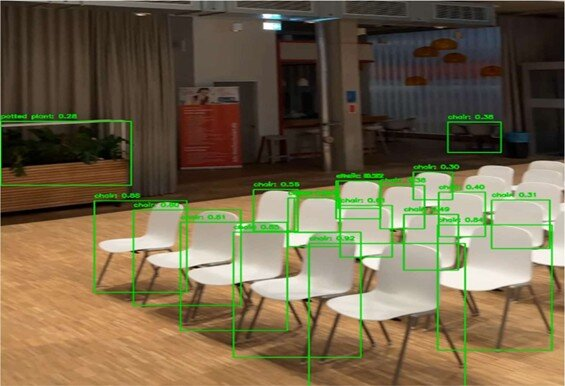

This project began as a school assignment aimed at exploring
real-time object detection using AI, specifically the YOLO (You Only Look Once) model.
The task was to apply YOLOv8 to a recorded video while walking through the SRH Berlin
building and analyze its performance.
At first, it seemed like a straightforward
experiment—run the model, detect objects, and document the results. However, as I progressed,
I realized there was much more to uncover. Beyond just recognizing objects, the project
highlighted the model’s strengths and weaknesses in real-world conditions, such as varying
lighting and object occlusion. It also raised important questions about AI’s role in
surveillance and privacy. What started as a simple technical exercise turned into a deeper
exploration of object detection, model comparisons, and ethical considerations, making this
project both an insightful and good learning experience.

Features:
Real-Time Object Detection:
- Efficient Video Processing: Uses YOLOv8 to detect objects in video frames with high speed and accuracy.
- Annotated Output: Saves processed videos with clear bounding boxes and labels for easy interpretation.
High Performance & Accuracy:
- Fast Detection: Runs at up to 35 FPS, ensuring smooth real-time object tracking.
- Reliable Recognition: Identifies multiple objects with confidence levels reaching up to 95%.
Scalable & Versatile:
- Optimized for Various Hardware: Works efficiently on both CPU and GPU for flexible deployment.
- Adaptable to Environments: Can be fine-tuned for improved accuracy in specific indoor locations.
Technologies Used:
- YOLOv8: A state-of-the-art deep learning model for real-time object detection, used to process video frames and detect objects.
- Python: The primary programming language used for implementing the object detection pipeline.
- Ultralytics YOLO Library: A Python library that provides easy-to-use implementations of YOLO models, including YOLOv8.
- OpenCV: A computer vision library used for video processing, drawing bounding boxes, and handling frame-by-frame object detection.
- PyTorch & Torchvision: Deep learning frameworks used for running the YOLOv8 model efficiently on both CPU and GPU.
- NumPy: A numerical computing library used for handling arrays and optimizing performance in processing video frames.

GitHub Repository